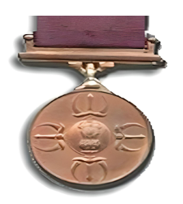
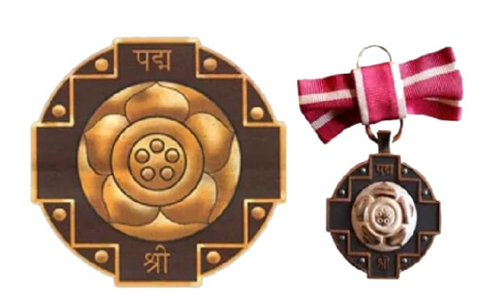
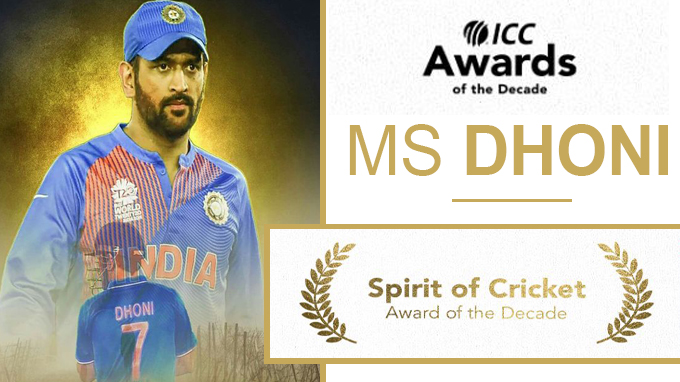
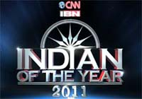
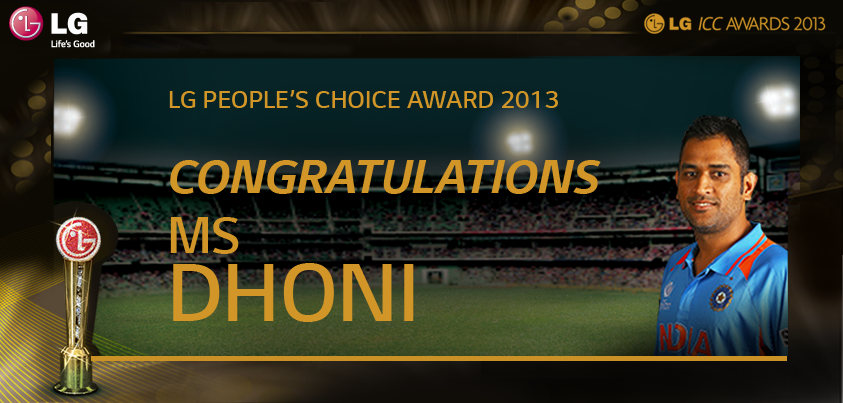

MAJOR ACCOLADES

MAJOR DHYAN CHAND KHEL RATNA AWARD
It is the highest sporting honour of India, awarded annually by the Ministry of Youth Affairs and Sports, Government of IndiaMS Dhoni won Khel Ratna Award in the year 2008.

PADMA SHREE
Padma Shri is the fourth highest civilian award in INDIA.MS Dhoni won the Padma Shri award in the year 2009.

recognise the player or team upholding the spirit of the game.
ICC SPIRIT OF CRICKET AWARD
The ICC Spirit of Cricket Award is annually awarded by the ICC torecognise the player or team upholding the spirit of the game.
MS Dhoni won the ICC Spirit of Cricket Award of the Decade
for a sporting
gesture towards Ian Bell in 2011.

CNN INDIAN OF THE YEAR
Awarded to an individual for his contribution to his country.MS Dhoni won the CNN INDIAN OF THE YEAR AWARD IN 2011.

LG People's Choice Award
This award signifies the love and respect for Cricket from all the Cricket lovers around the world.MS Dhoni won this award in the year 2013.

PADMA BHUSHAN
Padma Bhushan is the third highest civilian award in INDIA.MS Dhoni won the Padma Bhushan award on 2nd April, 2018.